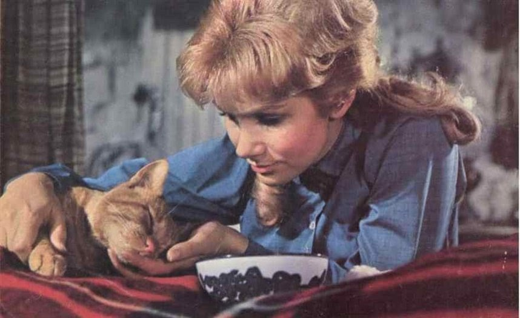

СЕМЕЙСТВО КОШАЧЬИХ
|  |  |
|
| «Три жизни Томазины» (1963) | «Гарри и Тонто» (1974) | «Кот из космоса» (1978) |
| Культовый фильм (спродюсированный Уолтом Диснеем) был создан по мотивам романа Пола Гэллико «Томасина. Кошка, которая думала, что была богиней». Полвека тому назад книга считалась сенсационным бестселлером. Существует и русская экранизация, получившая название «Безумная Лори». | Необычайно трогательная кинолента вызывает одновременно и нежную улыбку, и слезы грусти. Карри почти 80 лет, он стар, но довольно энергичен. Когда его дом сносят, мужчина вынужден вместе со своим котом (Тонто) переехать к сыну. Однако невестка не рада присутствию свекра и Гарри отправляется к дочке в Чикаго. На самолет он сесть не может, а сдавать кота в багажный отсек не хочет. Тогда Гарри едет к дочке на автобусе, но из-за питомца ему приходится выйти. Гарри берет в аренду машину. Так начинается путешествие по стране: вместе со случайными знакомыми и самым преданным другом – рыжим котом по кличке Тонто. | Когда корабль инопланетян попадает на землю, за пилотом начинают охотиться спецагенты. И кто бы мог подумать, что пришелец похож на земных котов? Только он говорящий! Внеземное создание зовут Зунар-Джей-5-Дорик-4-7 и ему крайне необходима помощь, чтобы вернуться домой. Зунар знакомится с Фрэнком и начинается самая необычная дружба на планете. Да что там… во всей вселенной! |
| «Мина. Леди-кошка» (2001) | «Кошки против собак» (2001) | «Гарфилд» (2004) |
| Замечательный семейный фильм придется по душе всем любителям кошек! Я не сразу узнала в главной героине Мелисандру из «Игры престолов». В роли Мины у Кэрис ван Хаутен просто ангельское выражение лица. | Лента явно рассчитана на любителей собак, а не кошек. Хотя коты в ней ну очень крутые! Лично я не люблю произведения о вражде кошек и собак, потому что обожаю и первых, и вторых. А еще они далеко не всегда враги. | Первый фильм в цикле экранизаций популярного комикса о наглом рыжем котяре. Гарфилда любят во всем мире: этот жирный, циничный лентяй обладает каким-то неописуемым шармом! Хозяин постоянно баловал своего кота, и Гарфилд жил будто в раю, до одного жуткого дня. Хозяину взбрело в голову обзавестись еще одним домашним питомцем – щенком по кличке Олди. Естественно, рыжий обжора не в восторге от того, что теперь ему приходится делить кров, еду и ласки хозяина с каким-то там псом. Но когда Олди похищают, Гарфилд смело бросается на выручку незваного соседа. |
| «Женщина-кошка» (2004) | «Кошка-приведение» (2004) | «Худшее Рождество сердитой кошки» (2014) |
| Существует несколько экранизаций комикса о грациозной супергероине, но вариант с Холли Бэрри признан необычайно захватывающим. Это история милой девушки, Пейшнс Филипс, которая вела тихую жизнь и никому не причиняла зла. Однажды она случайно узнала о преступлении, совершенном ее начальником. Девушку убивают, сбросив тело в сточные воды. Как ни странно, к ее трупу вдруг начинают стекаться толпы кошек, одна из которых дивном образом возвращает Пейшнс к жизни. Вот только теперь у нашей героини появились необычные силы и она способна поквитаться с обидчиками. | Уэс и Натали Мерриты – отец и дочь, недавно приехавшие в тихий городок Рингвуд. Здесь они заводят новые знакомства и сближаются с миссис Эшборо и ее кошкой по кличке Маргарет. Племянник старушки пытается выселить бедняжку, отправив в богадельню. Когда же миссис Эшборо почила, кошка тоже умерла, а жадный родственник тут же продал дом новым жильцам – Мерритам. Вскоре после переезда Натали замечает странные происшествия, происходящие каким-то загадочным образом. Дело в том, что дух Маргарет вернулся! | Наверняка вы видели снимки звезды интернета, кошки по кличке Соус Тадар, которую в народе прозвали Грампи (англ. «хмурая»). Эта милая особа с угрюмым выражением мордочки стала еще и кинозвездой! По сюжету фильма, Грампи живет в магазине по продаже домашних животных. Ей не удается найти хозяев из-за необычной физиономии, выражающей суровую безнадегу. Когда же у Грампи появляется хозяйка, оказывается, что девочка слышит все мысли кошки. И что вы думаете? Грампи и впрямь та еще брюзга, недовольная всеми вокруг. Но есть в ней что-то очаровательное. |
| «Девять жизней» (2016) | «Уличный кот по имени Боб» (2016) | «Город кошек» (2016) |
| Том Бренд интересовался карьерой больше, чем семьей. Брак с первой женой распался, да и второй уже трещит по швам из-за постоянного отсутствия главы семейства. Опоздав на день рождения младшей дочери в очередной раз, Том спешно ищет наилучший подарок и… сам им становится! Бизнесмена превратили в кота, теперь Бренд должен завоевать любовь дочери и исправить ошибки прошлого, иначе так и придется ему жить в кошачьей шкуре. Ситуация иронична, ведь Том ненавидит кошек! | Восхитительная кинолента о том, как важно найти спасительную соломинку в жизни, чтобы вырваться из пучины несчастий. Лента была создана по мотивам мемуаров Джеймса Боуэна, ставших бестселлером. Роль Джеймса исполнил Люк Тредевэй, а реальный автор появляется в конце ленты, чтобы попросить у киношной версии самого себя автограф для книги. При этом он говорит забавную фразу: «Будто про меня написано». | Единственная документальная лента в нашей подборке достойна отдельного внимания. Фильм снискал восторженные отзывы зрителей и критиков, получив несколько наград. Нам предстоит увлекательное путешествие по улицам Стамбула, где мы познакомимся с удивительными кошками и людьми, которые не мыслят своей жизни без замечательных пушистых друзей. Весь фильм пронизан юмором, добротой и безграничной любовью к кошкам. Операторы потрудились на славу, запечатлев чарующих кошек во время сна, игр и шалостей. |
| "Кошки"(2019) | Кот (2003) | Кошачий глаз |
| На ежегодный кошачий бал собираются кошки из племени избранных. Все они разные: породистые и беспородные, юные и старые, домашние любимцы и бездомные. Когда они собираются вместе, каждая кошка рассказывает о себе — чем же она так исключительна, и за что её можно считать избранной, чтобы она получила право отправиться в кошачий рай. | Конрад и Салли Валден дома со своей рыбкой одни. На улице дождь и делать решительно нечего. Пока не появляется Кот в Шляпе. Он знакомит детей с их воображением. Поначалу это игры и развлечения, но затем всё выходит из под контроля, и ему надо исчезнуть до прихода родителей… | Фильм объединяет в себе три новеллы — две из них из сборника «Ночная смена»: «Корпорация «Бросайте курить» и «Карниз». Третья — объединяющая новелла «Генерал» написана специально для фильма. Главным связующим звеном фильма является бездомный кот, пытающийся спасти маленькую девочку от неизвестной опасности |